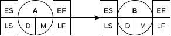

CM7
PERT temps
Dans le cadre de la gestion d'un projet, on peut soit adopter une démarche itérative (e.g. agile), soit planifier le projet en amont pour atteindre des objectifs donnés. On peut aussi découper le projet en différents livrables qu'on planifiera, tout en ayant une démarche itérative au sein de chaque livrable.
On peut ainsi découper le projet en plusieurs tâches, dont on estimera la durée ainsi que ses dépendances (e.g. pour débuter une tâche B, il faut que A soit fini) :
| Tâche | Deps | Durée |
|---|---|---|
| A | 1 | |
| B | A | 2 |
À partir de cela, il est alors possible de calculer les dates au plus tôt/au plus tard de début/fin de chaque tâches :
- Date au plus tôt de début/fin d'une tâche: on ne peut commencer/finir cette tâche avant cette date.
- Date au plus tard de début/fin d'une tâche: on ne peut commencer/finir cette tâche après cette date (retard).
Le diagramme PERT temps permet de représenter cela sous la forme d'un graphique. Il ne semble pas y avoir de représentations standardisées, nous vous proposons donc la représentation suivante :

- D : durée de la tâche
- M : marge
- ES/LS : earliest/latest start (colonne gauche)
- EF/LF : earliest/latest finish (colonne droite)
Le calcul de ces dates est très simple et très logique :
- Date au plus tôt de début de tâche : maximum des dates au plus tôt de fin de ses dépendances.
- Date au plus tard de fin de tâche : minimum des dates au plus tard de début des tâches dépendant de celle-ci.
- Date au plus tôt de fin/au plus tard de début : calculées à partir de sa durée et de ses dates connues.


La marge correspond à la différence entre la date au plus tard et la date au plus tôt, i.e. le retard qu'on peut prendre sans retarder la fin du projet.
Les tâches dont la marge est de 0 sont appelées tâches critiques, i.e. tout retard sur ces tâches retarde la fin du projet. Il convient donc de surveiller ces tâches de manière attentive afin de prévenir, anticiper, ou corriger tout retard. Un chemin critique correspond à une suite de tâches critiques.
PERT charge
Le PERT charge permet de planifier l'attribution des ressources disponibles aux différentes tâches du projet. L'intensité d'utilisation est le pourcentage de la ressource affectée à la tâche.
| Tâche | Deps | Durée | Intensité |
|---|---|---|---|
| A | 1 | 100% | |
| B | A | 2 | 75% |
| C | A | 2 | 75% |

Imaginons que nous ne disposions que d'une seule ressource, à moins de consentir à une surutilisation de la ressource, il n'est pas possible de dépasser les 100% d'utilisation. Plusieurs options s'offrent alors à nous :
- Décaller des tâches ou en allonger la durée.
- Recruter temporairement des ressources supplémentaires.
Il est possible que les marges soient (ou deviennent) négatives, i.e. le projet se finira en retard. On peut alors soit :
- Négocier les ambitions à la baisse ou une extension de la deadline auprès du client.
- Accepter de payer des pénalités par jours de retard au client.
- Réduire la durée des tâches en y affectant plus de ressources.
On tentera alors de réduire la durée des tâches critiques jusqu'à ce que le coût de réduction d'un jour devienne supérieur au coût d'un jour de pénalité.
⚠ Mythe du mois-homme : multiplier par n les ressources ne divise pas la durée de la tâche par n. 9 femmes enceintes ne produisent pas un bébé en 1 mois.
Estimer la durée d'une tâche, surtout en informatique, est très difficile. Il est ainsi important de prévoir une marge dans ses estimations, et de suivre les dates réelles de début/fin de tâches afin de pouvoir anticiper et ré-estimer les retards.